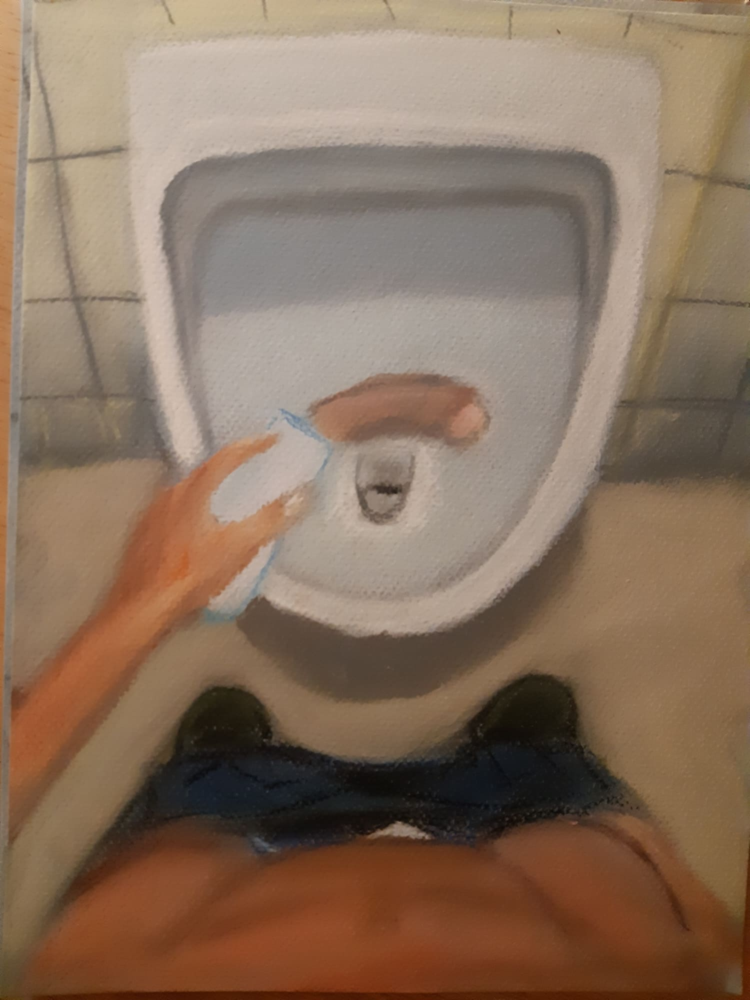

Um sich aus dem Idios Kosmos hinaus zu bewegen, braucht es eine echte Entscheidung. Im Lateinischen man entscheiden mit decidere. Der Wortstamm cidere bedeutet schneiden oder töten.
Ich hatte folgenden Traum:
„Ich schneide mir mit einer Rasierklinge den Penis ab und werfe ihn in ein Pissoir. Dann falte ich ihn in eine Serviette und nehme ihn mit für die Zukunft. An dem Ort, wo mein Penis war, wächst eine bläuliche Pyramide.“

Nach dem Traum entschied ich mich nie wieder zu masturbieren. Das war eine echte Entscheidung und scheint mir besonders passend für den Ausbruch aus dem Idios Kosmos. Die Masturbation ist auf sich selbst bezogene (autoerotische) Sexualität. Sich davon zu „scheiden“ könnte symbolisch den Ausweg aus dem Idios Kosmos markieren.
Ich möchte anmerken, dass ich damals nicht reif genug war Träume geschickt zu deuten. Meine Deutung war ungeschickt. Trotzdem kommt mir diese Deutung hier passend zur Hand.